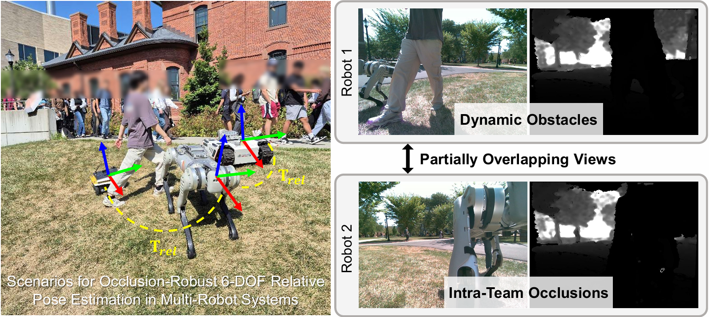
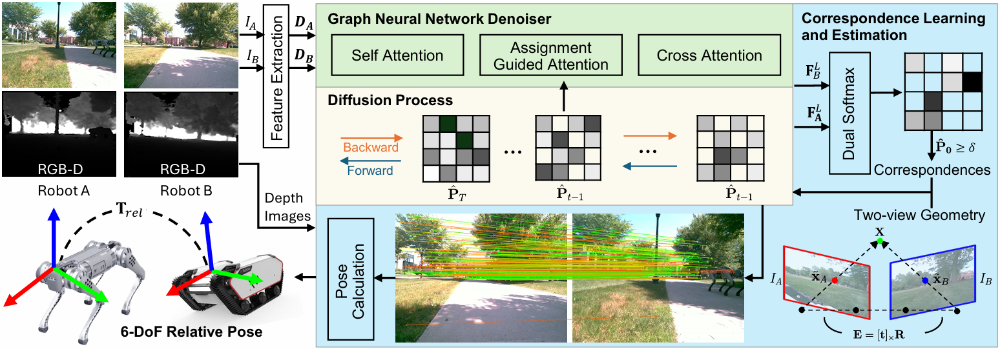

Motivation
Approach
Overview GADM.
Relative pose estimation is crucial for coordinated multi-robot navigation. However, robots in close proximity often face intra-team occlusions, where teammates partially block each other's field of view, while dynamic environments further introduce environmental occlusions. Classical relative pose estimation methods degrade under occlusion and texture scarcity, whereas learning-based methods often lack explicit geometric consistency, which limits their accuracy during real deployments. To address multi-robot relative pose estimation in complex 3D environments, we introduce \textit{Geometric-Aware Diffusion Matching} (GADM), which enables a team of robots to estimate relative 6-DoF poses using only RGB-D sensors, even under occlusions. GADM uses a diffusion model to progressively exploit global and higher-order structural constraints encoded by a graph network, guiding smoother optimization and faster convergence to robust correspondence distributions under noise and occlusions. By integrating geometric consistency, GADM explicitly addresses occlusions by producing geometrically consistent matches suitable for real-time deployment on physical robots. The resulting correspondences are then used with geometry-based solvers to estimate 6-DoF relative poses, providing robustness even under partial view overlap and limited keypoint visibility. We conducted experiments using both robotics simulations and physical robot teams, and our results show that GADM achieves robust 6-DoF pose estimation performance in occluded scenarios.
Overview GADM.
We validate our system through a downstream formation control task in GPS-denied outdoor environments, explicitly demonstrating the real-time applicability of GADM. Robots operate on uneven terrain with frequent mutual occlusions, dynamic pedestrians, moving obstacles, and varying illumination. The trained GADM model can run in real time at $\sim$10 Hz (trained model runs at $\sim$10 Hz standalone, but the full perception–control loop runs at $\sim$5 Hz) on an Intel i7-13620H CPU with an NVIDIA RTX~4050 GPU mounted on the B1 legged robot. To implement a leader-follower wedge formation, we set the B1 robot to serve as the leader, while the tracked Bunker and wheeled Jackal robots act as followers. Each follower robot (Jackal and Bunker) broadcasts its observations to the leader (B1), which estimates the relative poses using GADM. With synchronized RGB-D observations streamed to the remote node, B1 performs pairwise relative pose estimation via GADM and broadcasts the resulting estimates back to the follower robots. This configuration preserves a map-free design: no pre-built map, GPS, or infrastructure is required beyond standard time synchronization and sensor-to-base extrinsics calibration. By avoiding global mapping and relying solely on inter-robot observations, the system remains decentralized and agnostic to platform morphology, as long as extrinsics are known. The demo videos highlight robustness under dynamic pedestrians and varying light conditions.